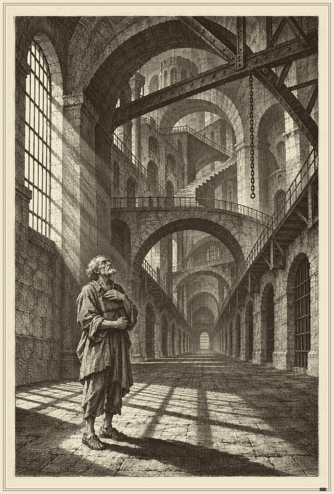
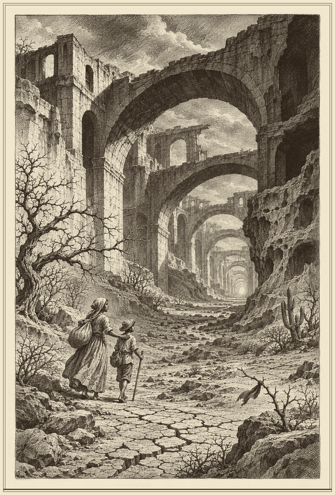
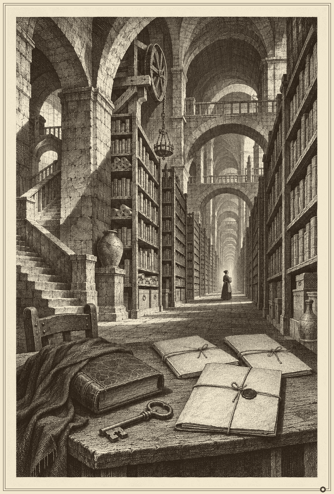
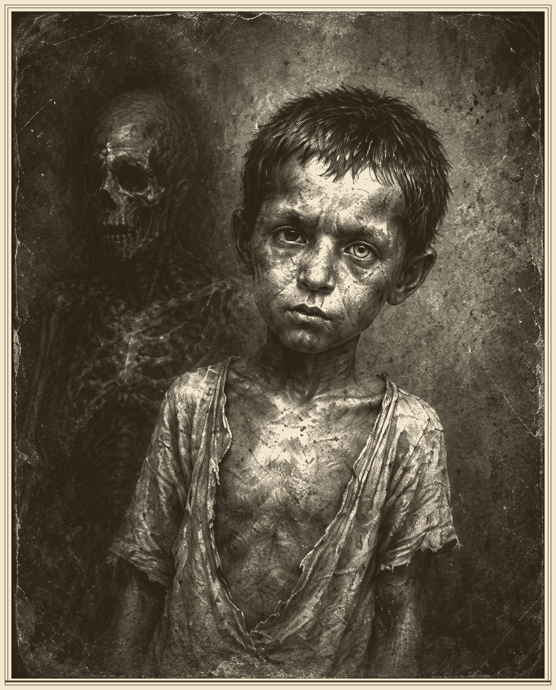
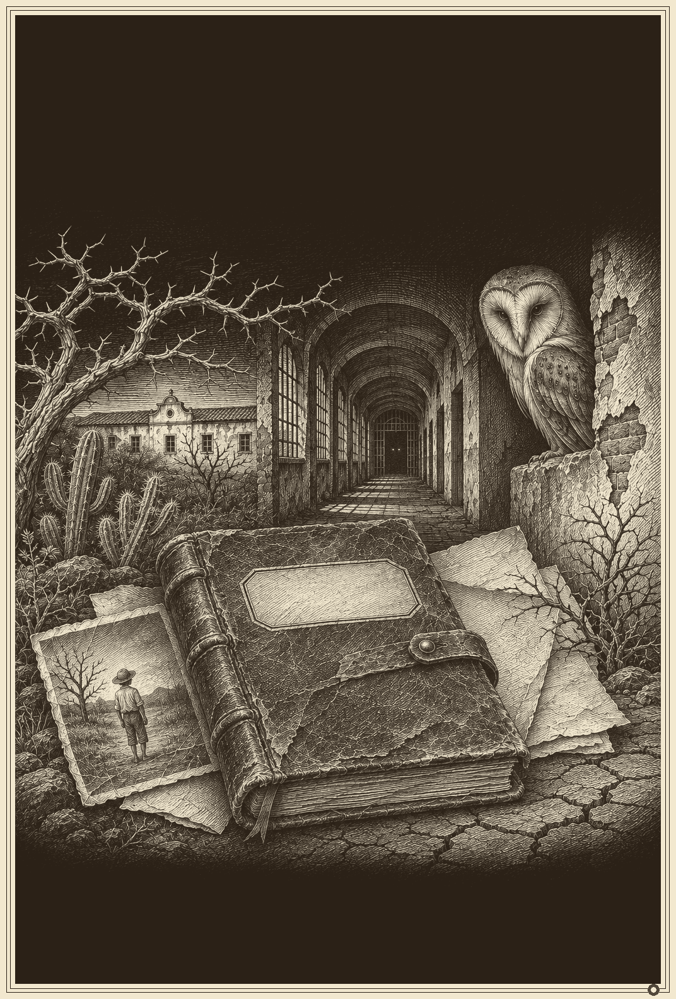
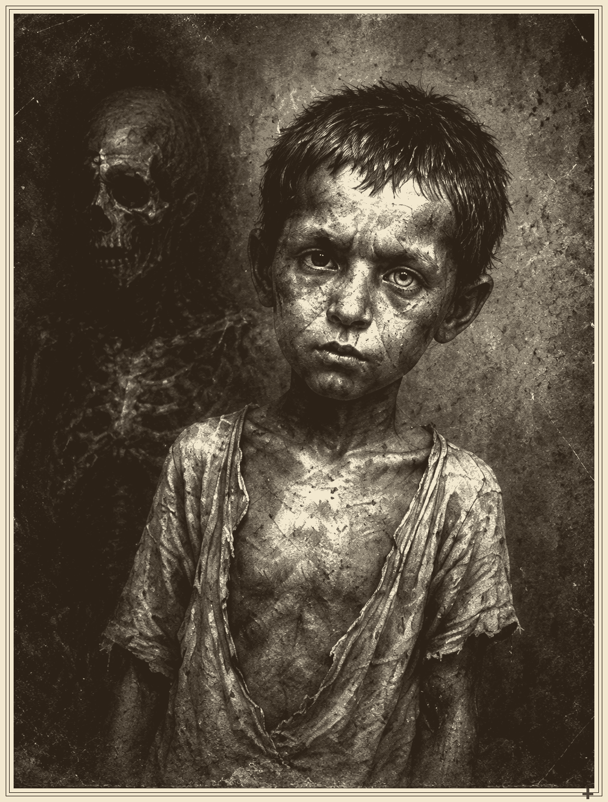

Molambudos · Caderno de Provas
Seis pranchas de prova · 160 × 230 mm
PROVA — NÃO É ARTE FINAL
Não é prova histórica, não é publicação e não é validação externa.
As imagens são ficcionais. A arte final exige re-layout, revisão humana e prova de impressão.
316–345 DPI no tamanho final de 86 mm. A 2× (172 mm), as fontes atuais caem para 158–173 DPI; não houve upscale. O caderno canônico do livro não foi alterado.
PRANCHA 01 · CARCERI DO COLÔNIA

arquitetura opressiva; figura pequena; hachura. Reconstituição ficcional.
PRANCHA 02 · PAISAGEM ERODIDA

seca; mulher e criança; arcos. Reconstituição ficcional.
PRANCHA 03 · ARQUIVO DOENTE

estantes; livros; selo. Reconstituição ficcional.
PRANCHA 04 · RETRATO EMBLEMÁTICO

criança; figura espectral. Reconstituição ficcional.
PRANCHA 05 · TABELA ALEGÓRICA

diário; coruja; foto; caatinga. Reconstituição ficcional.
PRANCHA 06 · ANATOMIA DA CONTAMINAÇÃO

detalhe do rosto; alto contraste. Reconstituição ficcional.
As artes de arte_confinamento, arte_sertao, arte_arquivo e arte_frontal_original foram geradas/editadas por IA no pacote R1082 e são reconstituições ficcionais. placa_00 é uma prancha existente do projeto. Nenhuma retrata vítima real identificável.
| Prancha | SHA-256 | DPI 86 mm | DPI 2× |
|---|---|---|---|
| Carceri do Colônia | cf106f04817160ef… | 316.6 | 158.3 |
| Paisagem Erodida | 8d9c8f63e0ac196c… | 316.6 | 158.3 |
| Arquivo Doente | 39f2a5d471251383… | 316.6 | 158.3 |
| Retrato Emblemático | 237d246853acb670… | 345.6 | 172.8 |
| Tabela Alegórica | 6c3dce9d23393189… | 316.6 | 158.3 |
| Anatomia da Contaminação | 9bb9025f2d358106… | 316.6 | 158.3 |
Lacuna 2×: seriam necessários 2032 px de largura para 172 mm a 300 DPI; as fontes têm 1024–1122 px. Não houve upscale artificial.
Limites: RGB, sem CMYK perfilado, sem PDF/X, sem prova física e sem aprovação da gráfica/KDP. Três artes têm arquitetura europeia; a adaptação brasileira está pendente. O perfil literário foi configurado para modelo local, mas a inferência local não foi comprovada nesta sessão.
Direção: Piranesi para arquitetura, escala e chiaroscuro; Pencz para figura, gesto e emblema; um acento carmim por prancha.